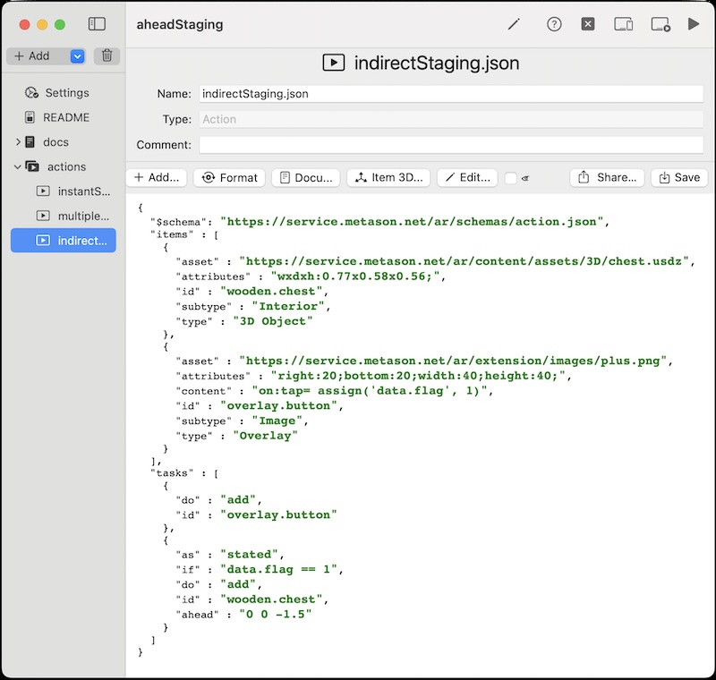

DeclARe is a scripting language for the creation of AR experiences. Instead of using a programming language to algorithmically define how AR content should be created and behave, it is based on a declarative approach that focuses on specifying WHAT needs to be accomplished with WHICH asset. To achieve this, the ARchi VR app interprets declarations in JSON data structures that do not include conventional programming code, but instead use active Event-Condition-Action rules to define the behavior of the AR experience. See the Technical Documentation on how to create curated AR content using DeclARe.
The mobile ARchi VR App is avialbable for iOS devices and interprets 'DeclARe' scripts as hand-held AR experiences. You may download ARchi VR for free on the Apple App Store.
ARchi Composer is a low-code editor for Mac to create dynamic and interactive AR content using the "DeclARe" scripting approach. The following scenarios of applied AR Patterns listed below are all provided as ARchi Composer projects. The sample scripts can be edited and live-injected to the ARchi VR App. The ARchi Composer is provided as free low-code editor.

Presentation of 3D content ahead of user.